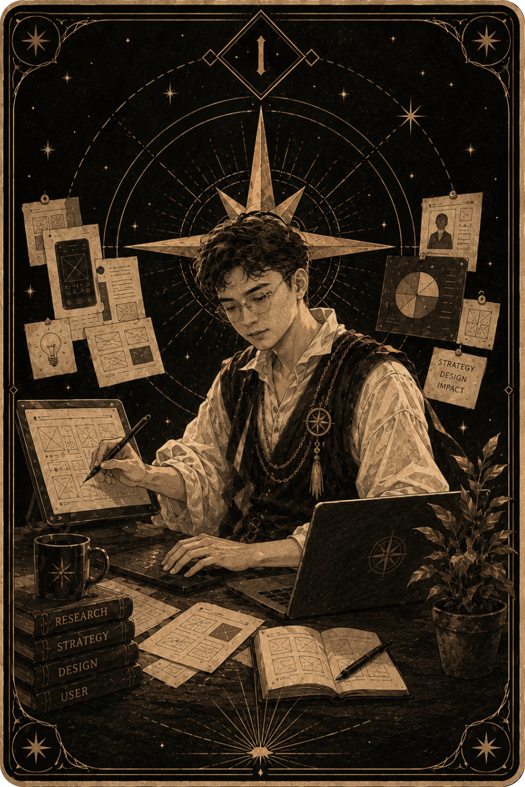
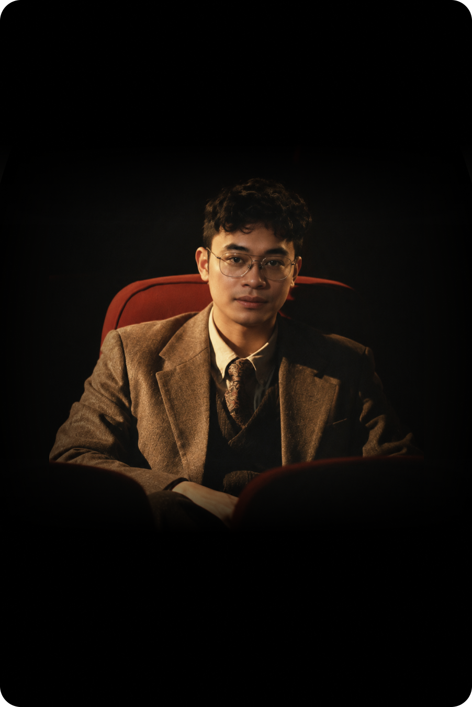

Most of design happens
before anyone sees it.
Behind every interface is a process of research, exploration, and iteration.


The road here was never a straight line.
I’m Arfian Arya, a UI/UX Designer who enjoys turning complex problems into simple, meaningful experiences. My curiosity led me to design, and I’ve been exploring the field since college, growing through internships, real-world projects, and plenty of self-driven learning.
I enjoy understanding why people do what they do, finding the story behind a problem, and turning those insights into thoughtful digital experiences. When I’m not designing, I’m usually watching movies, playing games, listening to music, and traveling.
Curious by nature, always learning, and always looking for the next path to explore.
Where the road has taken me.
{{ w.body }}
Four habits that survived every project.
{{ activeBody }}
Where the craft sits.
{{ s.body }}
Tools are habits, not identity.
I care more about the method than the software. These are simply the ones I reach for most.
Available for full-time Product Design roles.
Looking for a team building something that has to hold up, where research, systems and craft are treated as the same job.
Every step reveals something new